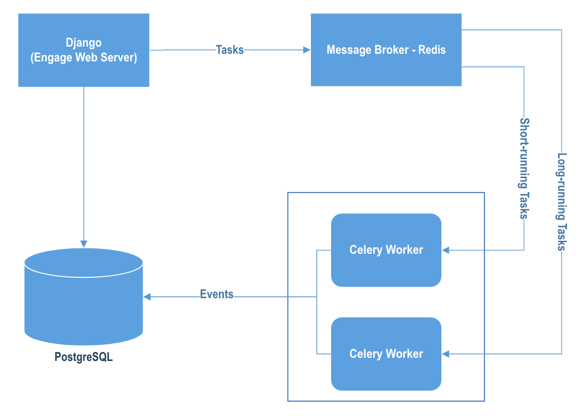
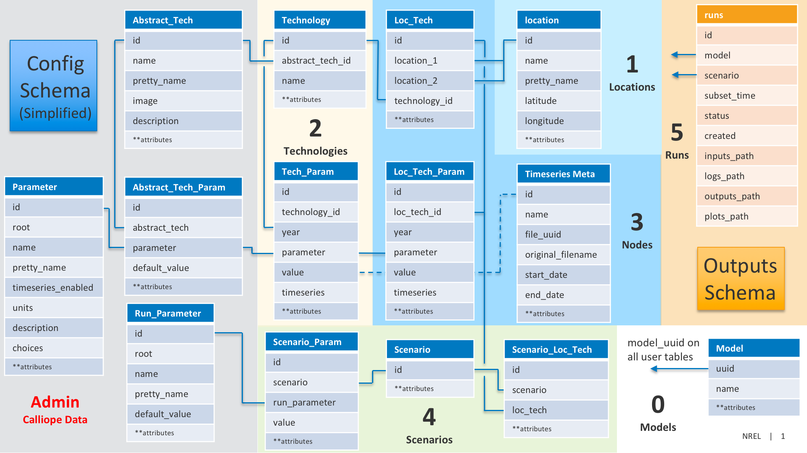
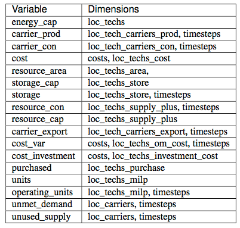

Developer Guide¶
How Engage Works¶
Architecture Diagram¶
This Engage web application is built on top of Django, PostgreSQL, Celery and Redis. The diagram below shows the architecture.
This Django application uses PostgreSQL as the database, and Celery Redis as the message broker for asynchronously running Engage models outside the HTTP request-response cycle. In Celery cluster, there are two kinds of workers - short-running task worker and long-running task worker.
Database Schema¶
The chart below shows the database schema.
Here also provides download of the schema in pdf and pptx formats,
PDF:
Database_Schema.pdfPPT:
Database_Schema.pptx
Django Apps¶
Django app describes a Python package that provides some set of features. There are three apps created in this Engage web application.
client: A combination of views, templates, static files, URLs for interacting with users in frontend.api: A combination of models, views, tasks and util functions for managing user files, building and running models in backend.taskmeta: A combination of models, signals for recording Celery task status and failure traceback.
Please refer to the source code for details.
Unit Test¶
Django provides a test framework that builds on the Python standard unittest library, with a small hierarchy. Based on API methods and tools privided by Django test framework, this application develops unit tests for HTTP-level request handling, model queries, and template rendering, etc.
There are two main apps need to run unit test - api and client. How to run unit tests under Django test
framework? Please make your docker-compose is up, and run the command line below:
$ docker-compose exec app bash
$ python manage.py test api client
It is essential of making sure that your code is safe to release after making changes, and cost-effective to maintain.
Django Celery¶
Celery, a popular distributed task queue, is applied in this project and used for running Engage models. The Celery worker is running in a separate container.
Celery Tasks¶
Currently, there are 3 types of Celery task in this project,
upload_ts: Create and upload user’s timeseries csv file, whereSoftTimeLimit=3540,TimeLimit=3600seconds.build_model: Build Engage model with inputs, whereSoftTimeLimit=3540,TimeLimit=3600seconds.run_model: Run optmization for model using specified solver, whereSoftTimeLimit=243600-180,TimeLimit=243600seconds.
What would happen if task got timeout?
The
SoftTimeLimitshould be less thanTimeLimit, it’d leave some time to clean up the task before killing the worker process.If
SoftTimeLimitreached, it would raise aSoftTimeLimitExceeded()error, then task failed.After
SoftTimeLimit, whenTimeLimitreached, system would kill the current worker process and start a new one.
Celery Flower¶
Flower is a web based tool for monitoring and administrating Celery workers. The link below is the address of Flower dashboard for dev.
To protect your Flower instance from unwarranted access, it’s recommend to setup authentication for access Flower dashboard.
For example, to use --basic_auth option when starting flower,
celery flower -A calliope_app --port=5555 --basic_auth=$FLOWER_BASIC_AUTH
Please do not setup this environment variable below:
FLOWER_BASIC_AUTH=your-username:your-password
For more information, please refer to https://flower.readthedocs.io/en/latest/auth.htm.
Email Notification¶
This web application supports AWS SES and sends email notification to user after Engage model got a long run (longer than 20 mins).
To enable this feature, please set the following environment variables:
AWS_ACCESS_KEY_ID=
AWS_SECRET_ACCESS_KEY=
AWS_SES_REGION_NAME=
AWS_SES_REGION_ENDPOINT=
AWS_SES_FROM_EMAIL=
Please notice that, this feature is optional, and has no effect to model run if not AWS SES setup.
Timeseries Data¶
You may need sample timeseries data for development, please checkout them here - sample timeseries data.
Calliope References¶
Official Documentation¶
This web application is built on top of Calliope - v0.6.6 for now, the official documentation is linked here
https://calliope.readthedocs.io/en/v0.6.6-post1/.
Example Models¶
The example models at national and urban scale can be find here - example models.
Commandlines¶
The followings are some commands related to Calliope calls.
# Generate Sample Model Files
$ calliope new urban_scale --template=urban_scale
# Model Run
$ calliope run inputs/model.yaml --save_csv=outputs —-save_logs=logs --save_plots=plots
Python APIs¶
Here are examples of Calliope calls via IPython.
>>> # Model Run
>>> import calliope
>>> model = calliope.Model('model.yaml')
>>> model.run()
>>> model.plot.flows() # Sample visualization
Citation¶
Stefan Pfenninger (2017). Dealing with multiple decades of hourly wind and PV time series in energy models: a comparison of methods to reduce time resolution and the planning implications of inter-annual variability. Applied Energy. doi: 10.1016/j.apenergy.2017.03.051
More Calliope¶
The decision variables are listed here:
